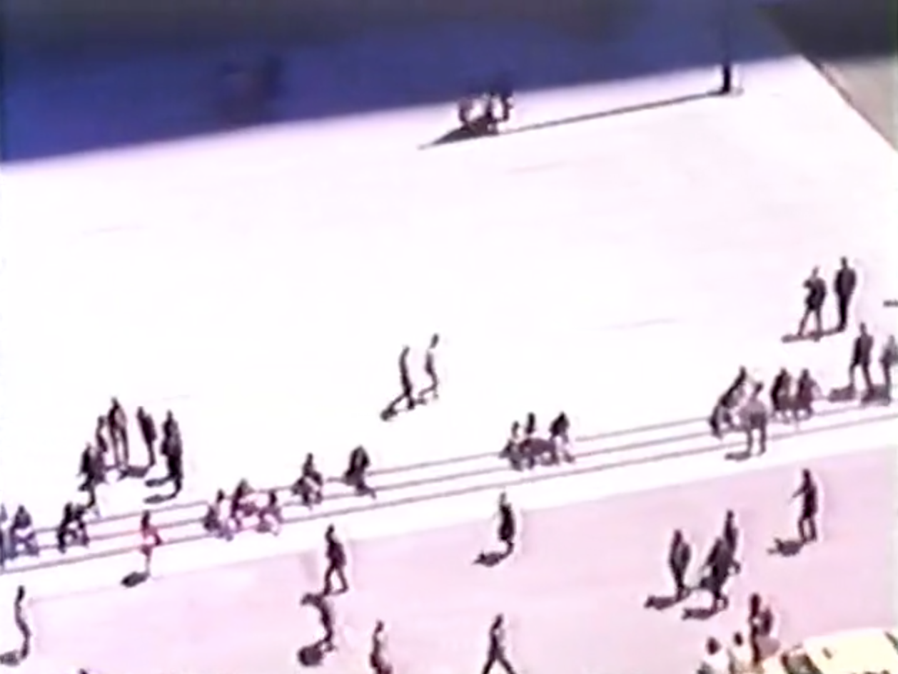

ABSTRACT
I would like to discern the role of graphic design in architecture and to point out the spheres where it is playing a key role. Graphic design is commonly being considered as a 2-dimensional practice, resulting in print or a digital product. However I see a strong connection in how its influence spreading further, on a larger scale of architecture and urban planning. For example, screens become a part of the architecture of the public space, and the content of the visuals influence the dynamics and social behaviour within these spaces. At the train stations and shopping malls the message coming from these screens is predominantly commercial and serve as a distraction and stimulator for consumerism. If graphic designers together with architects would create the content of these screens themselves and use it in the benefit of navigation and in favour of overall atmosphere, the station or a shopping mall could look entirely different–not only the content of the screen would change, but the use of it, and assumably the way the building is organised in the first place.
The architecture of Utrecht Central, as well as many other public spaces, has distinct features of mallification (a process of turning into a mall) and a so-called ‘junkspace’. These tendencies do not just happen, and among the consumer-orientated design with planned obsolescence, new media and graphic design are shaping these tendencies as well.
My central assumption within this thesis is that media is forming the perception and ways of thinking which leads to changes in how we approach urban planning and architecture. And since graphic design is responsible for communication and translation of information into a visual message, it stands behind that influence as well. I want to point out that the influence of graphic design goes out of the 2D canvas and has a wider, tangible affect.
Observation and personal experience of travelling through Utrecht Central during my internship for the period of 3 months became the starting point of this research.When talking about my experience I found out that I am not the only one concerned with overwhelming mallification and standartisation of public spaces. Amongst all I figured that there has always been concern that new media is going to damage society in some way. However, protesting against the progress never worked out. As a result societies would inevitably change, and these changes could be seen in every aspect of social and personal life.
First of all, I am looking at the development of communication methods and how it influenced society in the past. I use examples of how invention of alphabet, writing and print influenced communication and social behaviour and compare it to the situation happening nowadays. Graphic designers play a big role in the sphere of communication and distribution of information, and translating it to the audience, architects as well. Graphic design has the power of shaping the way how the media is going to influence our mins and how eventually the world around us is going to look and function.
–Jan Gehl
–Adolfo Natalini (Superstudio), 1971
–Pascal Schöning, Architrav Group
1
p.42 “In a Manner of Reading Design” edited by Katja Gretzinger.
Casco–Office for Art, Design and Theory. Jan van Eyck Academie.
Sternberg Press. 2012
2
p. 113 “The Medium is the Massage” by M. McLuhan, Q. Fiore. 1967
Published Penguin Design Series, 2008
3
p.42 “In a Manner of Reading Design” edited by Katja Gretzinger.
Casco–Office for Art, Design and Theory. Jan van Eyck Academie.
Sternberg Press, 2012
4
“The Internet, Youth Safety and the Problem of 'Juvenoia'” by David Finkelhor.
University of New Hampshire, Crimes against Children Research Center, January 2011
5
p.42 “In a Manner of Reading Design” edited by Katja Gretzinger.
Casco–Office for Art, Design and Theory. Jan van Eyck Academie.
Sternberg Press, 2012
6
p. 8 “The Medium is the Massage” by M. McLuhan, Q. Fiore. 1967
Published Penguin Design Series, 2008
7
p.365 “Globalizing Intimacy: The Role of Information and Communication Technologies
in Maintaining and Creating Relationships” by
Gill Valentine
“Women's Studies Quarterly”
Vol. 34, No. 1/2, The Global & the Intimate (Spring - Summer, 2006)
8
p.366 “Globalizing Intimacy: The Role of Information and Communication Technologies
in Maintaining and Creating Relationships” by
Gill Valentine
“Women's Studies Quarterly”
Vol. 34, No. 1/2, The Global & the Intimate (Spring - Summer, 2006)
9
p.366 “Globalizing Intimacy: The Role of Information and Communication Technologies
in Maintaining and Creating Relationships” by
Gill Valentine
“Women's Studies Quarterly”
Vol. 34, No. 1/2, The Global & the Intimate (Spring - Summer, 2006)
10
p.370 “Globalizing Intimacy: The Role of Information and Communication Technologies
in Maintaining and Creating Relationships” by
Gill Valentine
“Women's Studies Quarterly”
Vol. 34, No. 1/2, The Global & the Intimate (Spring - Summer, 2006)
11
p.378 “Globalizing Intimacy: The Role of Information and Communication Technologies
in Maintaining and Creating Relationships” by
Gill Valentine
“Women's Studies Quarterly”
Vol. 34, No. 1/2, The Global & the Intimate (Spring - Summer, 2006)
Physiology of the eye may have predisposed linear and sequential manners of thinking. The creation of the alphabet led to a linear and visual environment which contributed to the dominance of the left hemisphere. ‘All Western scientific models of communication are–like the Shanon-Weaver model–linear, sequential, and logical as a reflection of the late medieval emphasis on the Greek notion of the efficient causality.’ However, ‘For use in the electric age, a right-brain model of communication is necessary to demonstrate the “all-at-onceness” character of information moving at the speed of light’.13 ‘The findings of the Russian neyrophysiologist A.R. Luria […] show that the expression “linear thinking” is not merely a figure of speech, but a mode of activity which is peculiar to the anterior regions of the left hemisphere of the brain. […] The alphabet separated and isolated visual space from many other kinds of sensory space involved in senses of smell, touch, kinesthesia, and acoustics. […] The present electronic age, in its inescapable confrontation with simultaneity, presents the first serious threat to the 2500-year dominance of the left hemisphere. […] In general, it needs to be noted that left-hemisphere human has very little power to observe or control environments, or to see the patterns change.’14 ‘All of man’s artifacts, of language, of laws, of ideas and hypotheses, of tools, of clothing and computers, all of these are extensions of the human body. […] Communication media of the future will accentuate the extensions of our nervous systems, which can be disembodied and made totally collective’.5 ‘For use in an electronic age, a right-hemisphere model of communication is necessary, both because our culture has nearly completed the process of shifting its cognitive modes from the left to the right hemisphere, and because the electronic media themselves are right-hemisphere in their patterns and operation’.
12
p.48 "The Global Village. Transformations in the World Life and Media
in the 21st Century" by Marshall McLuhan and Bruce R. Powers.
Oxford University Press. New York, Oxford. 1989
13
p.3 "The Global Village. Transformations in the World Life and Media
in the 21st Century" by Marshall McLuhan and Bruce R. Powers.
Oxford University Press. New York, Oxford. 1989
14
p.62 "The Global Village. Transformations in the World Life and Media
in the 21st Century" by Marshall McLuhan and Bruce R. Powers.
Oxford University Press. New York, Oxford. 1989
15 "Disorientation: Bernard Rudofsky in the Empire of Signs" by Felicity D. Scott
16
https://youtu.be/wEyqGi_Sd74
Irma Boom interview for Dutch Profiles
17
p.3 "The Global Village. Transformations in the World Life and Media
in the 21st Century" by Marshall McLuhan and Bruce R. Powers.
Oxford University Press. New York, Oxford. 1989
18 p.92 "A guide to Archigram 1961-74" Academy Group, Archigram Archives, 1994
Anthropologist Setha M. Low, who spent 25 years on investigating and studying public squares, is claiming that plaza is the reflection of human aspirations. Public spaces like plazas, train stations and such, are places that form a core of the city. They cannot be avoided. In planned urban environment all kinds of artefacts of social world are being placed and interpreted. They dictate social behaviour. And that is why it is important to be aware of what is affecting our way of constructing these environments and how, so we can use it to our advantage.
19 http://www.mijnstation.nl/en/utrecht-centraal
I do understand the intentions behind such a solution for Utrecht Central. During the 1990s the station was closed off, busy and inconvenient. The changes were absolutely necessary and the architects’ aim was to satisfy the needs of an ever expanding target audience of travellers. The topic of comfort repeats in the interviews with the main architect Pieter van Rooj from Benthem Crouwel Architects. However, my experience of going through Utrecht Central was not filled with comfort. In fact, the sensations that I experienced were exactly the opposite.
In my opinion Utrecht Central Station is an example of how electronic media influenced the approach to organising physical space. Its architecture demonstrates that our assumption of what is comfortable and functional differs dramatically from the preliminary set of mind on the topic. But it also shows how the this knowledge is being mistreated and turned into manipulation into consumerism by aggressive advertising and ‘mallification'.
20
p.4 "The Global Village. Transformations in the World Life and Media
in the 21st Century" by Marshall McLuhan and Bruce R. Powers.
Oxford University Press. New York, Oxford. 1989
21
p.4 "The Global Village. Transformations in the World Life and Media
in the 21st Century" by Marshall McLuhan and Bruce R. Powers.
Oxford University Press. New York, Oxford. 1989
In 1922 in Kansas City, the first shopping mall was built and lives of consumers revolutionised from that moment. However, shopping malls didn't just happen. ‘They are not the result of wise planners deciding that suburban people, having no social life and stimulation, needed a place to go (Bombeck, 1985). The mall was originally conceived of as a community center where people would converge for shopping, cultural activity, and social interaction (Gruen & Smith, 1960)’. The first enclosed shopping mall appeared in Minneapolis in 1956. ‘Designed to get the shopper out of the harsh weather, it introduced the world to shopping complexes as worlds unto themselves–free from bad weather, life, crime, dirt and troubles.’ Malls to some extent, are social and community centres of their communities. ‘Indeed, shopping malls are the centre pieces for rejuvenation of urban centres […] Some malls are so large that they are communities. Chicago's Water Tower place has hotels, restaurants, offices, stores, restaurants, and residential units. The West Edmonton Mall in Canada, The largest mall in the world, has over 800 stores, ice skating, 24 movie screens'.
The invention of the shopping mall affected further approaches to architecture and urban planning in general. Rem Koolhas describes how modernisation affected architecture: ‘If space-junk is the human debris that litters the universe, Junk-Space is the residue mankind leaves on the planet. The built … product of modernisation is not modern architecture but Junkspace. Junkspace is what remains after modernisation has run its course, or, more precisely, what coagulates while modernisation is in progress, its fallout. […] It was a mistake to invent modern architecture for the twentieth century. Architecture disappeared in the twentieth century; […] Junkspace seems an aberration, but it is the essence, the main thing … the product of an encounter between escalator and air-conditioning […]’.22 The author draws a very distinguishable parallel pointing out the influence of new media on post-modern architecture: ‘… Because it cannot be grasped, Junkspace cannot be remembered. It is a flamboyant yet unmemorable, like a screen saver; its refusal to freeze ensures instant amnesia. […] A quasi-panoptical universe in which all the contents rearrange themselves in split seconds around the dizzy eye of the beholder'.23 Further he adds: ‘We have built more than did all previous generations put together, but somehow we do not register on the same scales’24–this sounds a lot like what Carr said about reading–we read more than previous generation quantity-wise, but we process information on a completely different level. ‘It fuses high and low, public and private, … '.25
Visual communication and graphic design deal with all kinds of communication media from writing and print to digital graphics. And as a creative industry it involves not only a sequential linear way of structuring and organising information, but also a ‘right-sided’ associative and metaphorical approach, which is, we concluded earlier, necessary for building a new model of communication. Because of this, in architecture, which forms social behaviour, there has to be a certain connection to graphic design.
22
p.175 "Junkspace" by Rem Koolhaas.
October, Vol. 100, Obsolescence. (Spring, 2002)
23
p.177 "Junkspace" by Rem Koolhaas.
October, Vol. 100, Obsolescence. (Spring, 2002)
24
p.177 "Junkspace" by Rem Koolhaas.
October, Vol. 100, Obsolescence. (Spring, 2002)
25
p.176 "Junkspace" by Rem Koolhaas.
October, Vol. 100, Obsolescence. (Spring, 2002)
Another architect who pursued revolutionary ideas in architecture is Cedric Price, and it is not a coincidence, that he is also known for graphical and visual representations of his ideas rather then actual architecture. His ‘Fun Palace’ would ‘…challenge the very definition of architecture, for it was not even a conventional ‘building’ at all, but rather a kind of scaffold or framework, enclosing a socially interactive machine - a virtual architecture merging art and technology. In a sense, it was the realisation of the long unfulfilled promise of Le Corbusier’s claims of technologically informed architecture and the ‘machine for living’. It was not a museum, nor a school, theatre, or funfair, and yet it could be all of these things simultaneously or at different times. The Fun Palace was an environment continually interacting and responding to people’.
26
pp.31-33 "A guide to Archigram 1961-74"
Academy Group, Archigram Archives, 1994
‘Architecture Without Architects attempts to break our narrow concepts of the art of building by introducing the unfamiliar world of non pedigreed architecture'.28 ‘Architecture Without Architects’, is the book by Bernard Rudofsky (and the exhibition held in November of 1964 at New York Museum of Modern Art). It tells us about architecture before it became an expert’s discipline and how it was developed in various cultures. ‘There is a good deal of irony in the fact that to stave off physical and mental deterioration the urban dweller periodically escapes his splendidly appointed lair to seek bliss in what he thinks are primitive surroundings: a cabin, a tent, or, if he is less hidebound, a fishing village or hill town abroad’. Rudofsky is calling upon learning from primitive cultures and vernacular architecture, but he also admits the importance of urban and architectural signage and speculates on his concerns over the increasingly disorienting visual and psychological experience of urban environments. In the past, architects dared to admit that graphic design has an important role within architecture. However the extent to which graphic design was admitted to have an impact was always quite literal and limited: to the signage, navigation and typography in space. Graphic design for architects in that sense serves a function of an extra layer, almost a decoration. They admit its functionalism, but discussions happen mostly about its aesthetic value. ‘Modern communication devices and easy to follow signposts save us from losing our way into labyrinths, but they also are to blame for our disenchantment with architectural space'.
27 preface of "Architecture Without Architects" by Bernard Rudofsky
28 preface of "Architecture Without Architects" by Bernard Rudofsky
However, from my point of view, the graphic design influence at its greatest, lies not in navigation design or map-making. As I see it, the most important impact lies in how graphic design, through operating various media, has the ability to form and shape our perception. That is what directs the concept of an architectural piece in the first place, architecture at its core.
‘A public space where people are not self-enclosed in the heightened way that happens when our minds are elsewhere than our bodies, may feel rich with possibility for spontaneous encounters. Even if we do not converse with others, our mutual reticence is experienced as reticence if our attention is not otherwise bound up, but is rather free to alight upon one another and linger or not, because we ourselves are free to pay out our attention to deliberate measures. To be the object of someone’s reticence is quite different from not being seen by them; we may have a vivid experience of having encountered another person, even if in silence. Such encounters are always ambiguous, and their need for interpretation gives rise to train of imaginings, often erotic. This is what makes cities exciting'.29
29
p.9 "The World Beyond Our Head. How To Flourish In The Age of Distraction" by Matthew Crawford.
Penguin Books 2016